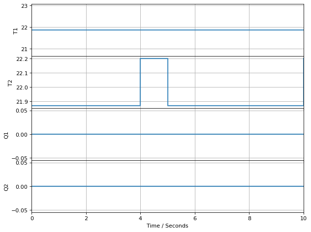

1.4. Testing Your Software Environment and TCLab#
We will use this notebook in the first tutorial to test your software environment and TCLab work.
1.4.1. Connect to TCLab and Turn On LED#
from tclab import TCLab
with TCLab() as lab:
lab.LED(100) # Set LED to full brightness
TCLab version 1.0.0
Arduino Leonardo connected on port /dev/cu.usbmodemWUART1 at 115200 baud.
TCLab Firmware 1.3.0 Arduino Leonardo/Micro.
TCLab disconnected successfully.
1.4.2. Connect to TCLab and Measure Ambient Temperature#
from tclab import TCLab, clock, Historian, Plotter, setup
# experimental parameters
tfinal = 10 # seconds
# perform experiment
with TCLab() as lab:
lab.U1 = 0
lab.U2 = 0
h = Historian(lab.sources)
p = Plotter(h, tfinal)
for t in clock(tfinal):
p.update(t)

TCLab disconnected successfully.
1.4.3. Solve Optimiation Problem in Pyomo#
import pyomo.environ as pyo
import idaes
# Create empty Pyomo model
m = pyo.ConcreteModel()
## Declare variables with initial values with bounds
m.x1 = pyo.Var(initialize=1, bounds=(-10, 10))
m.x2 = pyo.Var(initialize=1, bounds=(-10, 10))
m.x3 = pyo.Var(initialize=1, bounds=(-10, 10))
## Declare objective
m.OBJ = pyo.Objective(expr=m.x1**2 + 2*m.x2**2 - m.x3, sense = pyo.minimize)
## Declare equality constraints
m.h1 = pyo.Constraint(expr= m.x1 + m.x2 == 1)
m.h2 = pyo.Constraint(expr= m.x1 + 2*m.x2 - m.x3 == 5)
# Solve with Ipopt
opt1 = pyo.SolverFactory('ipopt')
status1 = opt1.solve(m, tee=True)
Ipopt 3.13.2:
******************************************************************************
This program contains Ipopt, a library for large-scale nonlinear optimization.
Ipopt is released as open source code under the Eclipse Public License (EPL).
For more information visit http://projects.coin-or.org/Ipopt
This version of Ipopt was compiled from source code available at
https://github.com/IDAES/Ipopt as part of the Institute for the Design of
Advanced Energy Systems Process Systems Engineering Framework (IDAES PSE
Framework) Copyright (c) 2018-2019. See https://github.com/IDAES/idaes-pse.
This version of Ipopt was compiled using HSL, a collection of Fortran codes
for large-scale scientific computation. All technical papers, sales and
publicity material resulting from use of the HSL codes within IPOPT must
contain the following acknowledgement:
HSL, a collection of Fortran codes for large-scale scientific
computation. See http://www.hsl.rl.ac.uk.
******************************************************************************
This is Ipopt version 3.13.2, running with linear solver ma27.
Number of nonzeros in equality constraint Jacobian...: 5
Number of nonzeros in inequality constraint Jacobian.: 0
Number of nonzeros in Lagrangian Hessian.............: 2
Total number of variables............................: 3
variables with only lower bounds: 0
variables with lower and upper bounds: 3
variables with only upper bounds: 0
Total number of equality constraints.................: 2
Total number of inequality constraints...............: 0
inequality constraints with only lower bounds: 0
inequality constraints with lower and upper bounds: 0
inequality constraints with only upper bounds: 0
iter objective inf_pr inf_du lg(mu) ||d|| lg(rg) alpha_du alpha_pr ls
0 2.0000000e+00 3.00e+00 3.33e-01 -1.0 0.00e+00 - 0.00e+00 0.00e+00 0
1 4.3065612e+00 1.11e-16 2.89e-01 -1.0 4.36e+00 - 6.72e-01 1.00e+00h 1
2 4.2501103e+00 0.00e+00 5.55e-17 -1.0 1.31e-01 - 1.00e+00 1.00e+00f 1
3 4.2500000e+00 0.00e+00 4.32e-16 -2.5 6.02e-03 - 1.00e+00 1.00e+00f 1
4 4.2500000e+00 8.88e-16 1.14e-16 -3.8 4.41e-05 - 1.00e+00 1.00e+00f 1
5 4.2500000e+00 0.00e+00 3.13e-16 -5.7 1.98e-06 - 1.00e+00 1.00e+00h 1
6 4.2500000e+00 0.00e+00 1.55e-16 -8.6 2.45e-08 - 1.00e+00 1.00e+00f 1
Number of Iterations....: 6
(scaled) (unscaled)
Objective...............: 4.2500000000000000e+00 4.2500000000000000e+00
Dual infeasibility......: 1.5452628521041094e-16 1.5452628521041094e-16
Constraint violation....: 0.0000000000000000e+00 0.0000000000000000e+00
Complementarity.........: 2.5059105039901454e-09 2.5059105039901454e-09
Overall NLP error.......: 2.5059105039901454e-09 2.5059105039901454e-09
Number of objective function evaluations = 7
Number of objective gradient evaluations = 7
Number of equality constraint evaluations = 7
Number of inequality constraint evaluations = 0
Number of equality constraint Jacobian evaluations = 7
Number of inequality constraint Jacobian evaluations = 0
Number of Lagrangian Hessian evaluations = 6
Total CPU secs in IPOPT (w/o function evaluations) = 0.003
Total CPU secs in NLP function evaluations = 0.000
EXIT: Optimal Solution Found.